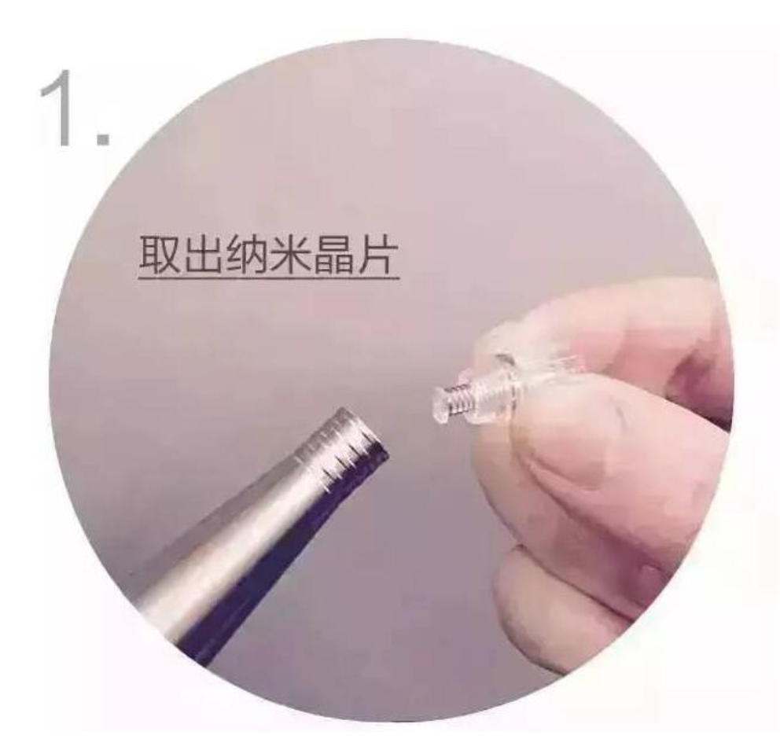
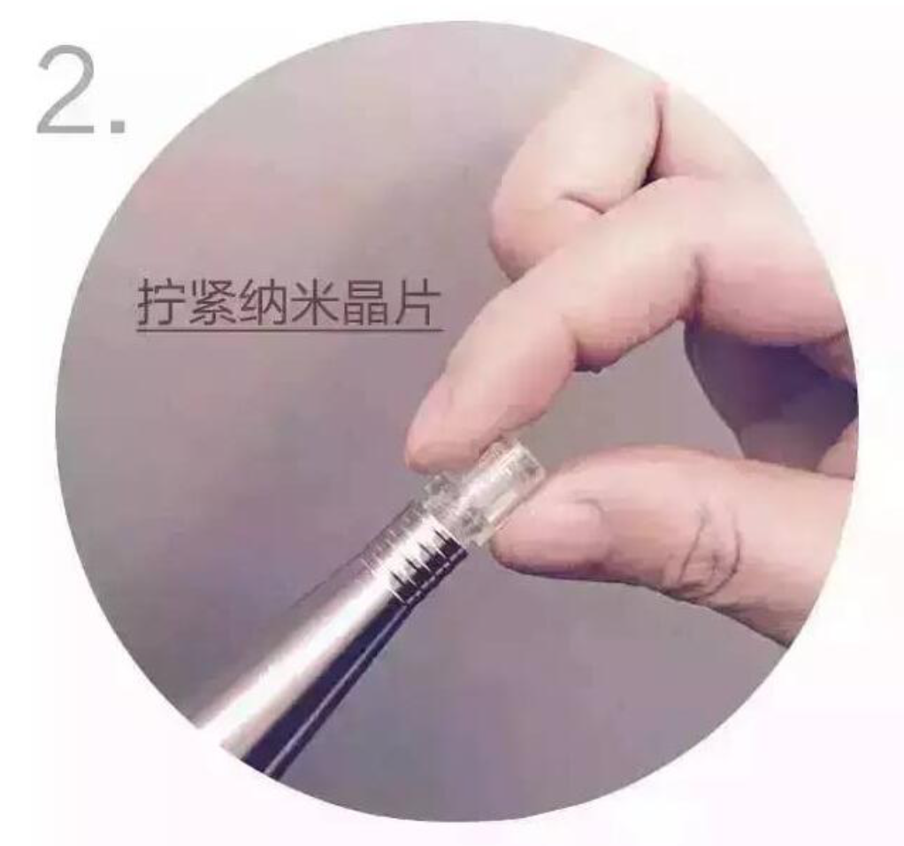
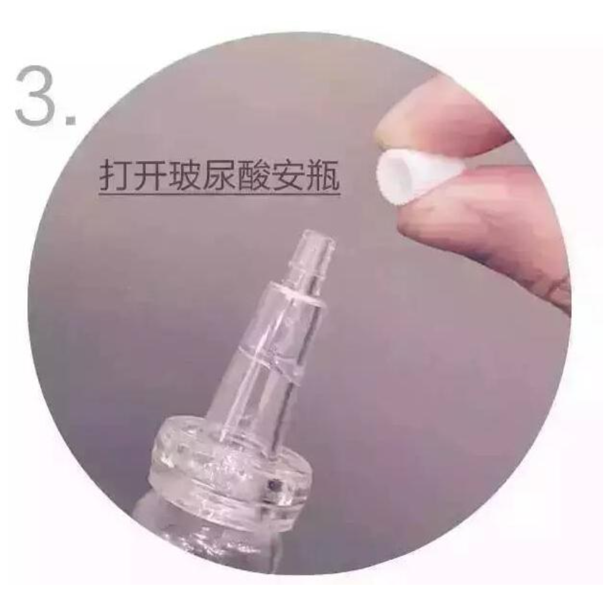
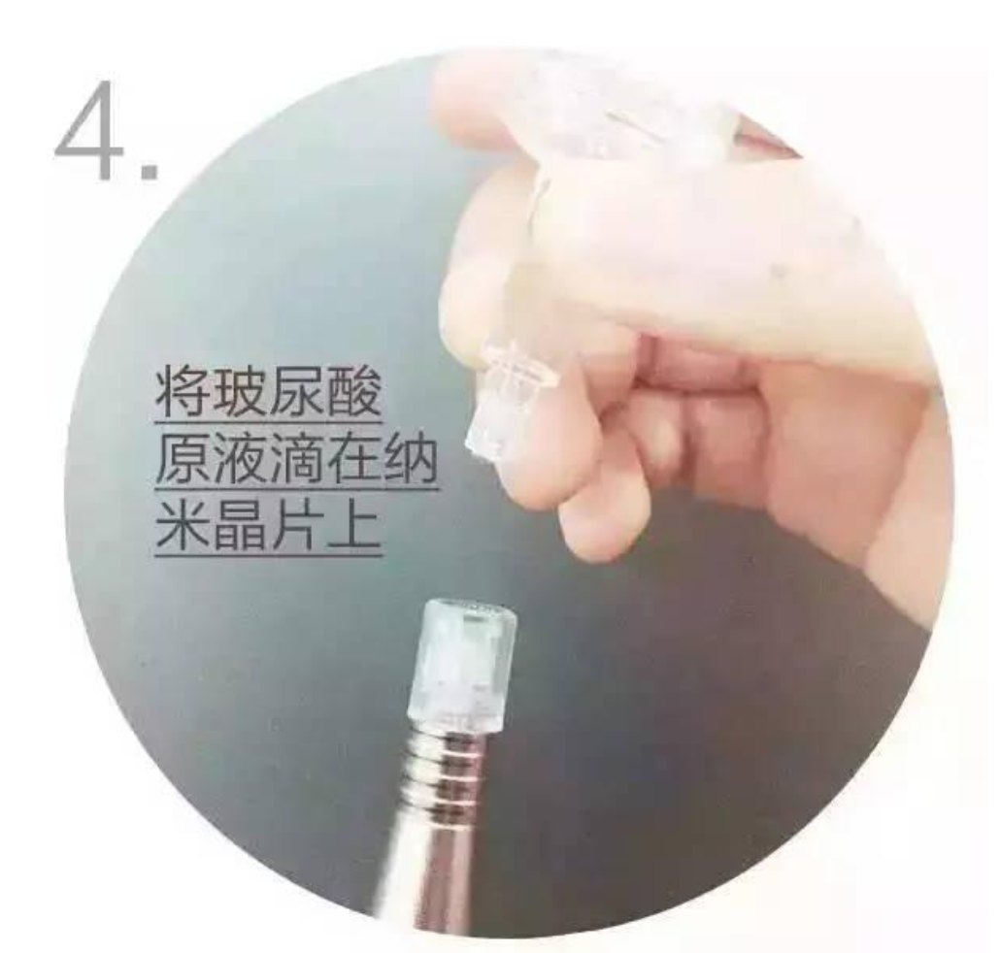
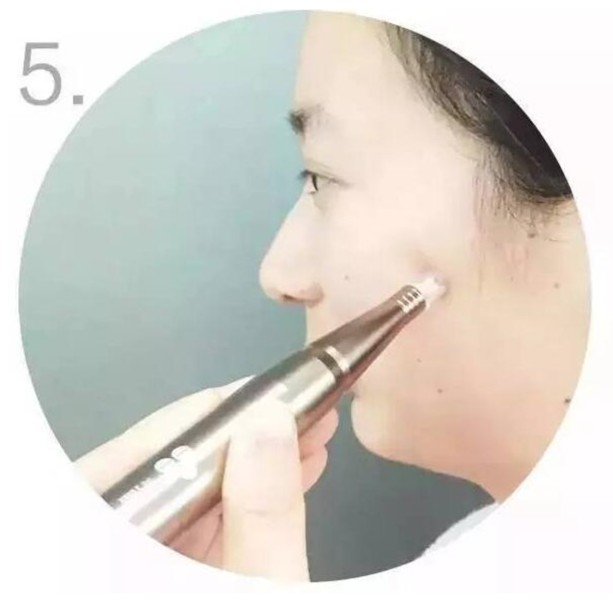

The Operation Procedure Of the Najing Bright and Moist
1.face-cleaning, take out the nano-crystal chip
2 Tightening the chip
Take out the pen of Najing firstly, bring out the chip you need, then tighten them
3 Open the bottle full of hyaluronic acid
Start with the Najing pen, smear hyaluronic acid onto the certain position you want
4 Drop hyaluronic acid on the chip
5 Import with the Najing pen
Import with the Najing pen in a regular line route unrepeatly, respectively from jaw, lip, cheek, nose, eye and forehead. Then keep the same in the other.
You need to know that the chip with hyaluronic acid isn’t used for one or two times on the same part until completed for the whole face in a drop-tapping way.
Caution:
People having a thin skin can use it slightly for 3 times at most, and clean up all the face after absorbing hyaluronic acid.
6 Facial mask of Najing brand
Keep it paste on the face for 15 minutes, then clean up.(clean up the face before using mask)
7 skin-nursing
Refresh the skin, smear the face cream. Close the skin-nursing.
Suggestion
People at home using the moisturizing face-mask of Najing in the evening for one week long, will enhance efficacy.